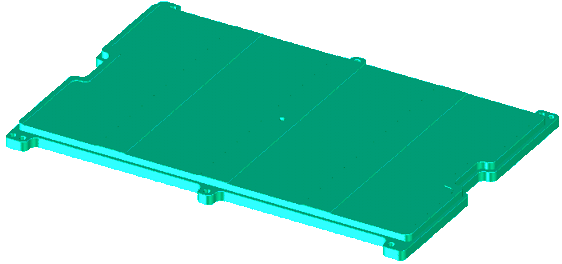

General purpose stiffener inlay plate
The general purpose inlay plate E6980DB (the figure below) is a solid inlay plate without any mounting holes. This general purpose inlay plate can be machined to fit handlers not covered by inlays E6980DC and E6980DD.

Functional changes
- Introduced before SmarTest 6.3.2